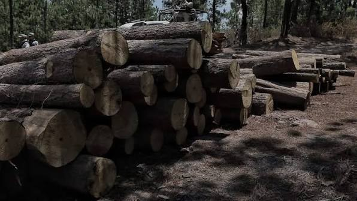

Imagen: Fernando Maldonado/El Sol de Morelia
En México, defender el territorio cuesta la vida, esta es una realidad marcada por la impunidad frente a un modelo económico que, históricamente, ha priorizado la extracción sobre la existencia. Sin embargo, el escenario de la violencia socioambiental ha mutado hacia una realidad aún más compleja y aterradora, hoy aquellos que protegen los bienes comunes ya no solo se enfrentan a corporaciones transnacionales o a megaproyectos impulsados sin consulta, hoy el adversario tiene otro rostro, uno armado y sin marco legal: el crimen organizado.
Este secuestro de la naturaleza no ocurre en el vacío, sino que es la consecuencia directa de un Estado que, en los hechos, ha decidido que el medio ambiente no es una prioridad. Cuando revisamos los presupuestos públicos y vemos los recortes históricos a las dependencias ambientales o las asignaciones raquíticas para cuidar las Áreas Naturales Protegidas, el mensaje gubernamental es claro: el territorio ha quedado en el abandono y, sabemos perfectamente que cualquier vacío institucional que deja el Estado, es rápidamente ocupado por la delincuencia.
Los bosques, el agua y los minerales se han convertido en un botín criminal inmensamente rentable, vemos los reportes recientes de organizaciones como el CEMDA y son alarmantes: la tala clandestina en Michoacán y en Chihuahua, el acaparamiento de manantiales y la minería ilegal están hoy bajo el control de cárteles, así ante la ausencia de guardabosques, de inspectores o de instituciones de justicia eficaces, las personas defensoras han quedado en la absoluta orfandad institucional, ya no solo exigen sus derechos ambientales ante un tribunal y se han visto obligadas a formar autodefensas para proteger al territorio de las balas de los grupos armados.
Casos emblemáticos como el de Homero Gómez, el guardián de la mariposa monarca, ilustran esta cruda realidad: cuando el activista estorba al millonario negocio de la tala clandestina, se convierte en un blanco para el cártel.
El ecocidio y el asesinato de líderes comunitarios son ahora eslabones de una misma economía criminal, por lo que para hablar de paz positiva en este contexto es necesario replantear nuestra idea de seguridad: no se puede pacificar a un país si su tierra, su agua y sus ecosistemas están secuestrados.
La paz positiva es tajante: no basta con silenciar las armas, hay que garantizar la dignidad y la vida, por lo que esta no llegará militarizando las calles, sino reconstruyendo a un Estado que fortalezca la gobernanza comunitaria y que proteja a quienes, desde la primera línea, defienden lo que nos mantiene vivos a todos. Es una premisa innegociable: sin justicia socioambiental, el territorio seguirá siendo un campo de guerra…
CIPMEX · Centro de Investigación para la Paz México, A.C. · Paz que se piensa, paz que se construye